산업안전기사 (2009-05-10 기출문제)
1과목: 안전관리론
1. 하인리히 재해코스트 중 직접비로 볼 수 없는 것은?
- 치료비
- 장해급여
- 생산손실비
- 장의비
(정답률: 82%)

2. 위험을 제어(control)하는 방법 중 가장 우선적으로 고려 되어야 하는 사항은?
- 개인용 보호장비를 지급하여 사용하게 한다.
- 근본적 위험요소의 제거를 위하여 노력한다.
- 안전교육을 실시하고, 주의사항과 위험표지를 부착한다.
- 위험을 줄이기 위하여 보다 개선된 기술과 방법을 도입한다.
(정답률: 77%)
3. 다음 중 관리감독자를 대상으로 교육하는 TWI의 교육 내용이 아닌 것은?
- 문제해결훈련
- 작업지도훈련
- 인간관계훈련
- 작업방법훈련
(정답률: 65%)
4. 연평균 500명의 근로자가 근무하는 사업장에서 지난 한해 동안 20명의 재해자가 발생하였다. 만약 이 사업장에서 한 작업자가 평생동안 작업을 한다면 약 몇 건의 재해를 당할 수 있겠는가? (단, 1인당 평생근로시간은 120000시간으로 한다.)
- 1건
- 2건
- 4건
- 6건
(정답률: 65%)
5. 다음 중 허츠버그(Herzberg)의 일을 통한 동기부여 원칙으로 잘못된 것은?
- 새롭고 어려운 업무의 부여
- 교육을 통한 간접적 정보제공
- 개인적 책임이나 책무의 증가
- 직무에 따른 책임과 권한 부여
(정답률: 62%)
6. 다음 중 심리학적 검사 분류에 포함되지 않는 것은?
- 직업적성 검사
- 지능 검사
- 성격 검사
- 시각기능 검사
(정답률: 78%)
7. 다음 중 부주의에 대한 설명으로 틀린 것은?
- 부주의는 착각이나 의식의 우회에 기인한다.
- 부주의는 적성 등의 소질적 문제와는 관계가 없다.
- 부주의는 불안전한 행위와 불안전한 상태에서도 발생된다.
- 불안전한 행동에 기인된 사고의 대부분은 부주의가 차지하고 있다.
(정답률: 79%)
8. 다음 중 플리커 검사(flicker test)의 목적으로 가장 적절한 것은?
- 혈중 알콜농도 측정
- 체내 산소량 측정
- 작업강도 측정
- 피로의 정도 측정
(정답률: 81%)
9. 방음용 귀마개 또는 귀덮개에서 사용하는 음압수준은 데시벨(dB)로 나타내는데 이는 소음계의 어떠한 특성을 기준으로 하는가?
- A 특성
- B 특성
- C 특성
- D 특성
(정답률: 65%)
10. 안전교육방법 중 학습자가 이미 설명을 듣거나 시범을 보고 알게 된 지식이나 기능을 강사의 감독 아래 직접적으로 연습하여 적용할 수 있도록 하는 교육방법은?
- 모의법
- 토의법
- 실연법
- 프로그램 학습법
(정답률: 78%)
11. 공기 중 산소농도가 부족하고, 공기 중에 미립자상 물질이 부유하는 장소에서 사용하기에 가장 적절한 보호구는?
- 면마스크
- 방독마스크
- 송기마스크
- 방진마스크
(정답률: 81%)
12. 인간의 행동에 관한 레윈(Lewin)의 식, ‘B = f(P・E)'에 대한 설명으로 옳은 것은?
- 인간의 개성(P)에는 연령과 지능이 포함되지 않는다.
- 인간의 행동(B)은 개인의 능력과 관련이 있으며, 환경과는 무관하다.
- 인간의 행동(B)은 개인의 자질과 심리학적 환경과의 상호 함수관계에 있다.
- B는 행동, P는 개성, E는 기술을 의미하며 행동은 능력을 기반으로 하는 개성에 따라 나타나는 함수관계이다.
(정답률: 72%)
13. 다음 중 교육계획서의 수립시 첫 번째 단계로 가장 적절한 것은?
- 교육의 요구사항 파악
- 교육내용의 결정
- 실행교육계획서 작성
- 교육실행을 위한 순서, 방법, 자료의 검토
(정답률: 64%)
14. ABE종 안전모에 대하여 내수성 시험을 할 때 물에 담그기 전의 질량이 400g 이고, 물에 담근 후의 질량이 410g이었다면 질량증가율과 합격여부로 옳은 것은?
- 질량증가율 : 2.5%, 합격여부 : 불합격
- 질량증가율 : 2.5%, 합격여부 : 합격
- 질량증가율 : 102.5%, 합격여부 : 불합격
- 질량증가율 : 102.5%, 합격여부 : 합격
(정답률: 78%)
15. 적응기제(Adjustment Mechanism) 중 자신의 난처한 입장이나 실패의 결점을 이유나 변명으로 일관하는 것을 무엇이라 하는가?
- 투사(projection)
- 동일화(identification)
- 승화(sublimation)
- 합리화(rationalization)
(정답률: 80%)
16. 안전교육에 있어 학습경험선정의 원리와 거리가 먼 것은?
- 가능성의 원리
- 계속성의 원리
- 다목적 달성의 원리
- 동기유발의 원리
(정답률: 66%)
17. 다음 중 산업안전보건법상 안전인증 대상 위험기계・기구가 아닌 것은?
- 원심기
- 크레인
- 압력용기
- 프레스
(정답률: 65%)
18. 다음 중 재해의 기본원인 4M 에 해당하지 않는 것은?
- Machine
- Media
- Management
- Method
(정답률: 79%)
19. 산업안전보건법상 산업안전보건위원회의 사용자위원에 해당되지 않는 사람은?
- 안전관리자
- 해당 사업장 부서의 장
- 산업보건의
- 명예산업안전감독관
(정답률: 84%)
20. 공기 중 사염화탄소의 농도가 0.2% 인 작업장에서 근로자가 착용할 방독마스크 정화통의 유효시간은 얼마인가? (단, 정화통의 유효시간은 0.5%에 대하여 100분이다.)
- 200분
- 250분
- 300분
- 350분
(정답률: 72%)
2과목: 인간공학 및 시스템안전공학
21. 다음 중 기계와 비교하여 인간이 정보처리 및 결정의 측면에서 상대적으로 우수한 것은?
- 연역적 추리
- 관찰을 통한 일반화
- 정량적 정보처리
- 정보의 신속한 보관
(정답률: 66%)
22. FMEA에서 고장의 발생확률 β 가 다음 값의 범위일 경우 고장의 영향으로 옳은 것은?
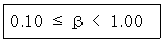
- 손실의 영향이 없음
- 실제 손실이 발생됨
- 손실 발생의 가능성이 있음
- 실제 손실이 예상됨
(정답률: 56%)
23. FTA 에 의한 재해사례 연구순서 중 제1단계는?
- FT도의 작성
- 개선 계획의 작성
- 톱(TOP) 사상의 선정
- 사상의 재해 원인의 규명
(정답률: 80%)
24. 다음 그림에서 전체 시스템의 신뢰도는 약 얼마인가? (단, 모형 안의 수치는 각 부품의 신뢰도이다.)
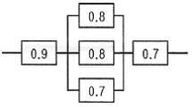
- 0.221
- 0.483
- 0.622
- 0.767
(정답률: 71%)
25. 다음 중 인간-기계시스템의 설계 원칙으로 볼 수 없는 것은?
- 배열을 고려한 설계
- 양립성에 맞게 설계
- 인체특성에 적합한 설계
- 기계적 성능에 적합한 설계
(정답률: 71%)
26. 평균고장시간(MTTR)이 6×105 시간인 요소 3개소가 병렬계를 이루었을 때의 계(system)의 수명은?
- 2×105 시간
- 6×15 시간
- 11×105 시간
- 18×105 시간
(정답률: 43%)
27. “표시장치와 이에 대응하는 조종장치 간의 위치 또는 배열이 인간의 기대와 모순되지 않아야 한다.“는 인간 공학적 설계원리와 가장 관계가 깊은 것은?
- 개념양립성
- 공간양립성
- 운동양립성
- 문화양립성
(정답률: 66%)
28. 다음 중 시스템의 수명곡선에서 고장형태가 감소형에 해당하는 것은?
- 초기고장기간
- 우발고장기간
- 마모고장기간
- 피로고장기간
(정답률: 72%)
29. 일반적으로 연구조사에 사용되는 기준의 요건 중 다음 설명에 해당하는 것은?
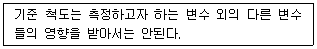
- 무오염성
- 신뢰성
- 적절성
- 검출성
(정답률: 74%)
30. 다음 중 가장 보편적으로 사용되는 시력의 척도는?
- 동시력
- 최소인식시력
- 입체시력
- 최소가분시력
(정답률: 48%)
31. 다음 중 인간의 감각 반응속도가 빠른 것부터 순서대로 나열한 것은?
- 청각 > 시각 > 통각 > 촉각
- 청각 > 촉각 > 시각 > 통각
- 촉각 > 시각 > 통각 > 청각
- 촉각 > 시각 > 청각 > 통각
(정답률: 64%)
32. 부울대수식
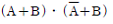
를 가장 간단하게 표현한 것은?- A ∙ B
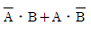
- A
- B
(정답률: 46%)
33. 다음 중 인간과 주위의 열교환 과정을 나타내는 열균형 방정식에 적용되는 요소가 아닌 것은?
- 대류
- 복사
- 증발
- 반사
(정답률: 59%)
34. 영상표시단말기(VDT) 취급 근로자를 위한 조명과 채광에 대한 설명으로 옳은 것은?
- 화면을 바라보는 시간이 많은 작업일수록 화면 밝기와 작업대 주변 밝기의 차를 줄이도록 한다.
- 작업장 주변 환경의 조도를 화면의 바탕 색상이 흰색계통일 때에는 300Lux 이하로 유지하도록 한다.
- 작업장 주변 환경의 조도를 화면의 바탕 색상이 검정색 계통일 때에는 500Lux 이상을 유지하도록 한다.
- 작업실 내의 창・벽면 등은 반사되는 재질로 하여야하며, 조명은 화면과 명암의 대조가 심하지 않도록 하여야 한다.
(정답률: 58%)
35. 다음 중 시스템안전위험분석(SSHA)을 수행하기 위한 최초의 작업으로서 구상단계나 설계 및 발주의 극히 초기에 실시되는 것은?
- 예비위험분석(PHA)
- 결함위험분석(FHA)
- 디시젼트리(DT)
- 결함수분석(FTA)
(정답률: 78%)
36. 의도는 올바른 것이었지만, 행동이 의도한 것과는 다르게 나타나는 오류를 무엇이라 하는가?
- Lapse
- Slip
- Violation
- Mistake
(정답률: 66%)
37. 다음 중 인체측정자료의 응용원칙에 있어 조절식 설계를 적용하기에 가장 적절한 것은?
- 그네줄의 인장강도
- 자동차 운전석 의자의 위치
- 전동차의 손잡이 높이
- 은행의 창구 높이
(정답률: 77%)
38. FT도에 사용되는 다음 기호의 명칭으로 옳은 것은?
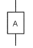
- 부정게이트
- 위험지속기호
- 수정기호
- 배타적 OR 게이트
(정답률: 58%)
39. 다음 중 정적(static) 표시장치의 예로서 가장 적합한 것은?
- 속도계
- 습도계
- 안전표지판
- 교차로의 신호등
(정답률: 73%)
40. 다음 FT도에서 시스템의 신뢰도는 약 얼마인가? (단, 모든 부품의 발생확률은 0.15 이다.)
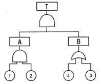
- 0.0033
- 0.0062
- 0.9938
- 0.9966
(정답률: 35%)
3과목: 기계위험방지기술
41. 왕복운동하는 운동부와 고정부 사이에 형성되는 위험점은?
- 끼임점
- 협착점
- 절단점
- 물림점
(정답률: 75%)
42. 산소-아세틸렌 용접 중 고무호스에 역화 현상이 발생한다면 가장 먼저 취해야 할 조치사항은?
- 아세틸렌 밸브를 잠근다.
- 토치를 물에 넣는다.
- 산소 밸브를 잠근다.
- 산소 밸브 및 아세틸렌 밸브를 동시에 잠근다.
(정답률: 70%)
43. 무부하 상태에서 지게차 주행시의 좌우 안정도 기준은? (단, V는 구내 최고속도[km/h]이다.)
- (15+1.1×V)% 이내
- (15+1.5×V)% 이내
- (20+1.1×V)% 이내
- (20+1.5×V)% 이내
(정답률: 69%)
44. 안전계수가 5인 체인의 허용하중이 1200N 이라면, 이체인의 극한 강도는 몇 N 인가?
- 3000
- 4000
- 5000
- 6000
(정답률: 80%)
45. 플레이너 작업시의 안전대책으로 거리가 먼 것은?
- 베드 위에 다른 물건을 올려놓지 않는다.
- 바이트는 되도록 짧게 나오도록 설치한다.
- 프레임 내의 피트(pit)에는 뚜껑을 설치한다.
- 칩브레이커를 사용하여 칩이 길게 되도록 한다.
(정답률: 79%)
46. 프레스의 손쳐내기식 방호장치 설치기준으로 틀린 것은?
- 슬라이드 행정수가 120spm 이상의 것에 사용한다.
- 슬라이드의 행정길이가 40mm 이상의 것에 사용한다.
- 슬라이드 조절 양이 많은 것에는 손쳐내기 봉의 길이 및 진폭의 조절범위가 큰 것을 선정한다.
- 방호판의 폭이 금형 폭의 1/2(최소폭 120mm) 이상 이어야 한다.
(정답률: 47%)
47. 탁상용 연삭기의 연삭숫돌의 바깥지름이 330mm이면, 평형 플랜지의 직경은 최소 몇 mm 이상이어야 하나?
- 165mm 이상
- 82.5mm 이상
- 110mm 이상
- 100mm 이상
(정답률: 74%)
48. 사업주가 사다리식 통로를 설치하는 때에 준수해야 할사항 중 틀린 것은?
- 발판과 벽과의 사이는 15cm 이상의 간격을 유지할 것
- 사다리가 넘어지거나 미끄러지는 것을 방지하기 위한 조치를 할 것
- 사다리의 상단은 걸쳐놓은 지점으로부터 30cm 이상 올라가도록 할 것
- 사다리식 통로의 길이가 10m 이상인 때에는 5m이내마다 계단참을 설치할 것
(정답률: 71%)
49. 산업용 로봇의 가동영역내에서 교시작업을 행할 때 취해야 할 조치사항이 아닌 것은?
- 작업중의 매니퓰레이터 속도에 관한 지침을 정하고 그 지침에 따라 작업한다.
- 작업자가 이상을 발견할 시는 관리감독자가 올 때까지 로봇운전을 계속한다.
- 작업을 하는 동안 기동스위치에 타작업자가 작동시킬수 없도록 작업 중 표시를 한다.
- 2인 이상의 근로자에게 작업을 시킬 때의 신호방법을 정한다.
(정답률: 81%)
50. 산업안전기준에 정하고 있는 승강기의 방호장치가 아닌 것은?
- 조속기
- 출입문 인터록
- 이탈방지장치
- 파이널 리밋 스위치
(정답률: 48%)
51. 압력용기 및 공기 압축기에 설치해야 하는 안전장치는?
- 안전밸브
- 압력제한스위치
- 고저수위조절장치
- 화염검출기
(정답률: 54%)
52. 프레스기계의 위험을 방지하기 위한 본질적 안전화(no-hand in die 방식)가 아닌 것은?
- 금형에 안전울 설치
- 수인식 방호장치 사용
- 안전금형의 사용
- 전용프레스 사용
(정답률: 66%)
53. 사전에 회전축의 재질, 형상 등에 상응하는 종류의 비파괴검사를 실시해야 하는 고속회전체는?
- 회전축의 중량이 1톤을 초과하고, 원주속도가 100m/s 이상인 것
- 회전축의 중량이 1톤을 초과하고, 원주속도가 120m/s 이상인 것
- 회전축의 중량이 0.5톤을 초과하고, 원주속도가 100m/s 이상인 것
- 회전축의 중량이 0.5톤을 초과하고, 원주속도가 120m/s 이상인 것
(정답률: 72%)
54. 사업주가 보일러의 폭발사고예방을 위하여 항상 기능이 정상적으로 작동될 수 있도록 유지, 관리할 대상이 아닌 것은?
- 폭발검출기
- 압력방출장치
- 압력제한스위치
- 고저수위조절장치
(정답률: 71%)
55. 공작기계에서 덮개 또는 울의 방호장치를 설치해야 할 기계가 아닌 것은?
- 띠톱기계의 위험한 톱날부위
- 형삭기 램의 행정 끝
- 터릿 선반으로부터의 돌출 가공물
- 모떼기 기계의 날
(정답률: 45%)
56. 목재가공용 둥근톱의 톱날 지름이 500mm 일 경우 분할날의 최소길이는 약 몇 mm 인가?
- 161.7mm
- 261.8mm
- 361.7mm
- 461.8mm
(정답률: 56%)
57. 동력식 수동 대패 기계에 관한 설명 중 옳지 않는 것은?
- 날 접촉예방장치에는 가동식과 고정식이 있다.
- 접촉 절단 재해가 발생할 수 있다.
- 덮개와 송급측 테이블면 간격은 8mm 이내로 한다.
- 가동식 날 접촉예방장치는 동일한 폭의 가공재를 대량 생산하는데 적합하다.
(정답률: 57%)
58. 이동식 크레인의 방호장치에 해당하지 않는 것은?
- 파이널 리밋 스위치
- 과부하 방지장치
- 권과 방지장치
- 브레이크 장치
(정답률: 64%)
59. 원심압축기 및 펌프의 자체검사 항목이 아닌 것은?
- 모터의 절연저항을 측정한다.
- 유입 측의 압력을 측정한다.
- 축수부의 발열상태를 조사한다.
- 윤활유의 주유상태 및 열화의 유무를 조사한다.
(정답률: 29%)
60. 기계부품에 작용하는 하중에서 일반적으로 안전 계수를 가장 크게 취하는 것은?
- 반복하중
- 교번하중
- 충격하중
- 정하중
(정답률: 75%)
4과목: 전기위험방지기술
61. 다음 전기기기의 접지 시설이 옳지 않은 것은?
- 접지선은 도전성이 큰 것 일수록 좋다.
- 400V 이상의 전압기기는 특별 제3종 접지공사를 한다.
- 접지시설시 선로측을 먼저 연결하고 대지에 접지극을 매설한다.
- 접지선은 가능한 한 굵은 것을 사용한다.
(정답률: 55%)
62. 다음 중 피뢰기가 갖추어야 할 특성으로 알맞은 것은?
- 충격방전 개시전압이 높을 것
- 제한 전압이 높을 것
- 뇌전류의 방전 능력이 클 것
- 속류를 차단하지 않을 것
(정답률: 66%)
63. 속류를 차단할 수 있는 최고의 교류전압을 피뢰기의 정격전압이라고 하는데 이 값은 통상적으로 어떤 값으로 나타내고 있는가?
- 최대값
- 평균값
- 실효값
- 파고값
(정답률: 68%)
64. 다음 ( ⓐ ), ( ⓑ )에 들어갈 내용으로 알맞은 것은?
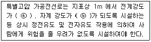
- ⓐ 0.35kV/m 이하 ⓑ 0.833µT 이하
- ⓐ 3.5kV/m 이하 ⓑ 8.33µT 이하
- ⓐ 3.5kV/m 이하 ⓑ 83.3µT 이하
- ⓐ 35kV/m 이하 ⓑ 833µT 이하
(정답률: 46%)
65. 일반적으로 고압 또는 특별고압용 개폐기・차단기・피뢰기 기타 이와 유사한 기구로서 동작시 아크가 생기는 것은 목재의 벽 또는 천장 기타의 가연성 물체로부터 각각 몇 [m] 떼어 놓아야 하는가?
- 고압용 1m 이상, 특별고압용 2m 이상
- 고압용 1.5m 이상, 특별고압용 2m 이상
- 고압용 1.5m 이상, 특별고압용 2.5m 이상
- 고압용 2m 이상, 특별고압용 2.5m 이상
(정답률: 60%)
66. 정전기로 인한 발화의 예방법이 아닌 것은?
- 정전기의 발생 방지조치
- 대전 방지조치
- 공기 건조조치
- 공기 이온화 조치
(정답률: 66%)
67. 내압(耐壓)방폭 구조의 화염일주 한계를 작게 하는 이유로 가장 알맞은 것은?
- 최소 점화 에너지를 높게 하기 위하여
- 최소 점화 에너지를 낮게 하기 위하여
- 최소 점화 에너지 이하로 열을 식히기 위하여
- 최소 점화 에너지 이상으로 열을 높이기 위하여
(정답률: 64%)
68. 다음 중 폭발위험장소에 전기설비를 설치할 때 전기적인 방호조치로 적절하지 않은 것은?
- 단락보호장치는 고장상태에서 자동복구 되도록 한다.
- 배선은 단락・지락 사고시의 영향과 과부하로부터 보호한다.
- 자동차단이 점화의 위험보다 클 때는 경보장치를 사용한다.
- 다상 전기기기는 결상운전으로 인한 과열방지조치를 한다.
(정답률: 67%)
69. 20Ω의 저항 중에 5A의 전류를 3분간 흘렸을 때의 발열량은 몇 [cal] 인가?
- 4320cal
- 90000cal
- 21600cal
- 376560cal
(정답률: 52%)
70. 교류 3상 전압 380[V], 부하 50[kVA]인 경우 배선에서의 누전전류의 한계는 약 [mA] 인가?
- 10mA
- 38mA
- 54mA
- 76mA
(정답률: 45%)
71. 다음 중 방폭전기기기 선정시 고려할 사항으로 거리가 먼 것은?
- 위험장소의 종류, 폭발성 가스의 폭발등급에 적합한 방폭구조를 선정한다.
- 동일장소에 2종 이상의 폭발성 가스가 존재하는 경우에는 경제성을 고려하여 평균위험도에 맞추어 방폭구조를 선정한다.
- 환경조건에 부합하는 재질, 구조를 갖는 것으로 선정한다.
- 보수작업시의 정전범위 등을 검토하고 기기의 수명,운전비, 보수비 등 경제성을 고려하여 방폭구조를 선정한다.
(정답률: 70%)
72. 다음의 통전경로 중 가장 위험도가 높은 것은?
- 왼손-가슴
- 왼손-오른발 또는 오른손-왼발
- 왼손-오른손 또는 오른손-왼손
- 왼손-등
(정답률: 77%)
73. 400V 미만의 저압 전기기기나 전동기 및 분전반 등의 외함을 접지할 때 접지저항[Ω]은?
- 10Ω 이하
- 70Ω 이하
- 100Ω 이하
- 150Ω 이하
(정답률: 41%)
74. 폭발 위험장소의 전기설비에 공급하는 전압으로써 안전초저압(Safety extra-low voltage)의 범위는?
- 교류 50V, 직류 120V를 각각 넘지 않는다.
- 교류 30V, 직류 42V를 각각 넘지 않는다.
- 교류 30V, 직류 110V를 각각 넘지 않는다.
- 교류 50V, 직류 80V를 각각 넘지 않는다.
(정답률: 52%)
75. 정격사용율 30%, 정격2차전류 300A인 교류아크 용접기를 200A로 사용하는 경우의 허용사용율은?
- 67.5%
- 91.6%
- 110.3%
- 130.5%
(정답률: 62%)
76. 피뢰설비를 보호능력의 관점에서 분류하면 4등급으로 분류 할 수 있는데 다음 중 옳지 않은 것은?
- 완전보호
- 보통보호
- 증강보호
- 이중보호
(정답률: 38%)
77. 입욕자에게 전기적 자극을 주기 위한 전기욕기의 전극간의 제한 전압은?
- 6V 이하
- 10V 이하
- 30V 이하
- 60V 이하
(정답률: 49%)
78. 접지 저항치를 저하시키는 방법 중 일반적인 방법과 거리가 먼 것은?
- 접지봉을 깊이 박는다.
- 접지봉을 병렬로 연결한다.
- 약품법을 사용한다.
- 접지봉에 도금을 한다.
(정답률: 57%)
79. 다음 중 정전기에 대한 설명으로 가장 알맞은 것은?
- 전하의 공간적 이동이 적고 자계의 효과가 전계의 효과에 비해 큰 전기
- 전하의 공간적 이동이 적고 전계의 효과가 자계의 효과에 비해 큰 전기
- 전하의 공간적 이동이 적고 전계의 효과와 자계의 효과가 서로 비슷한 전기
- 전하의 공간적 이동이 크고 자계의 효과와 전계의 효과를 서로 비교할 수 없는 전기
(정답률: 44%)
80. 감전방지용 누전차단기의 정격감도전류 및 작동시간은 얼마인가?
- 30mA 이하, 0.1초 이내
- 30mA 이하, 0.03초 이내
- 50mA 이하, 0.1초 이내
- 50mA 이하, 0.03초 이내
(정답률: 69%)
5과목: 화학설비위험방지기술
81. 가스 포집기를 이용한 검지관 방법으로 네슬러 시약을 이용하여 암모니아를 검지하고자 한다. 이 때 검지관의 변색으로 옳은 것은?
- 갈색
- 청색
- 적색
- 녹색
(정답률: 66%)
82. 다음 중 산업안전보건법령상 산화성 액체 및 산화성 고체에 해당하지 않는 것은?
- 염소산
- 과망간산
- 과산화수소
- 피크린산
(정답률: 60%)
83. 다음 중 열교환기의 보수에 있어 일상점검항목이 아닌 것은?
- 도장의 노후상황
- 부착물에 의한 오염의 상황
- 보온재, 보냉재의 파손여부
- 기초볼트의 체결정도
(정답률: 56%)
84. 반응폭발에 영향을 미치는 요인 중 그 영향이 가장 적은 것은?
- 교반상태
- 냉각시스템
- 반응온도
- 반응생성물의 조성
(정답률: 56%)
85. 공기 중에서 폭발범위가 12.5~74vol% 인 일산화탄소의 위험도는 얼마인가?
- 4.92
- 5.26
- 6.26
- 7.⑤
(정답률: 62%)
86. 다음 중 물질에 대한 저장방법으로 잘못된 것은?
- 나트륨 - 석유 속에 저장
- 니트로글리세린 - 유기용제 속에 저장
- 적린 - 냉암소에 격리 저장
- 질산은 용액 - 햇빛을 차단하여 저장
(정답률: 51%)
87. 비점이 낮은 액체 저장탱크 주위에 화재가 발생했을 때 저장탱크 내부의 비등 현상으로 인한 압력 상승으로 탱크가 파열되어 그 내용물이 증발, 팽창하면서 발생되는 폭발현상을 무엇이라 하는가?
- UVCE
- BLEVE
- 개방계 폭발
- 중합 폭발
(정답률: 74%)
88. 다음 중 산업안전보건법상 물질안전보건자료의 작성・비치 제외 대상이 아닌 것은?
- 원자력법에 의한 방사성 물질
- 농약관리법에 의한 농약
- 비료관리법에 의한 비료
- 관세법에 의해 수입되는 유기용제
(정답률: 68%)
89. 다음 [표]를 참조하여 메탄 70vol%, 프로판 21vol%, 부탄 9vol% 인 혼합가스의 폭발범위로 옳은 것은?
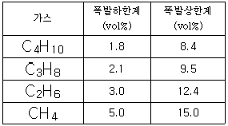
- 약 1.99~9.11vol%
- 약 3.45~12.58vol%
- 약 3.85~13.46vol%
- 약 3.95~13.68vol%
(정답률: 61%)
90. 외부에서 화염, 전기불꽃 등의 착화원을 주지 않고 물질을 공기 중 또는 산소 중에서 가열할 경우에 착화 또는 폭발을 일으키는 최저온도는 무엇인가?
- 인화온도
- 연소점
- 비등점
- 발화온도
(정답률: 55%)
91. 다음 중 Halon 2402 의 화학식으로 옳은 것은?
- C2I4Br2
- C2F4Br2
- C2Cl4Br2
- C2I4Cl2
(정답률: 69%)
92. 대기압에서 물의 엔탈피가 1kcal/kg 이었던 것이 가압하여 1.45kcal/kg 을 나타내었다면 flash율은 얼마인가? (단, 물의 기화열은 540cal/g 이라고 가정한다.)
- 0.00083
- 0.0083
- 0.0015
- 0.015
(정답률: 46%)
93. 다음 설명에 해당하는 위험성 평가기법은?
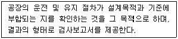
- 안전성검토법
- 상대위험순위결정법
- 원인결과분석법
- 예비위험분석기법
(정답률: 58%)
94. 인화성 가스가 발생할 우려가 있는 장소에서 작업을 할때 폭발 또는 화재를 방지하기 위한 조치사항 중 가스의 농도를 측정하는 방법으로 적절하지 않은 것은?
- 매일 작업을 시작하기 전에 측정한다.
- 가스에 대한 이상이 발견되었을 때 측정한다.
- 장시간 작업할 때에는 매 8시간마다 측정한다.
- 가스나 발생하거나 정체할 위험이 있는 장소에 대하여 측정한다.
(정답률: 70%)
95. 인화성액체 및 인화성가스를 저장 취급하는 화학설비로부터 증기 또는 가스를 대기로 방출할 때 외부로부터의 화염을 방지하기 위한 화염방지기의 설치 위치로 옳은 것은?
- 설비의 상단
- 설비의 하단
- 설비의 측면
- 설비의 조작부
(정답률: 73%)
96. 다음 중 위험물과 그 소화방법이 잘못 연결된 것은?
- 염소산칼륨 - 다량의 물로 냉각소화
- 마그네슘 - 건조사 등에 의한 질식소화
- 칼륨 - 이산화탄소에 의한 질식소화
- 아세트알데히드 - 분무상의 물에 의한 희석소화
(정답률: 36%)
97. 8% NaOH 수용액과 5% NaOH 수용액을 반응기에 혼합하여 6% 100kg의 NaOH 수용액을 만들려면 각각 몇 kg의 NaOH 수용액이 필요한가?
- 5% NaOH수용액 : 50.5, 8% NaOH수용액 : 49.5
- 5% NaOH수용액 : 56.8, 8% NaOH수용액 : 43.2
- 5% NaOH수용액 : 66.7, 8% NaOH수용액 : 33.3
- 5% NaOH수용액 : 73.4, 8% NaOH수용액 : 26.6
(정답률: 60%)
98. 다음 중 폭발범위에 관한 설명으로 틀린 것은?
- 상한값과 하한값이 존재한다.
- 공기와 혼합된 인화성 가스의 체적 농도로 나타낸다.
- 온도에는 비례하나, 압력과는 관련이 없다.
- 인화성 가스의 종류에 따라 각각 다른 값을 갖는다.
(정답률: 75%)
99. 다음 중 폭발 또는 화재가 발생할 우려가 있는 건조 설비의 구조로 적절하지 않은 것은?
- 건조설비의 외면은 불연성 재료로 만들 것
- 위험물 건조설비의 열원으로 직화를 사용하지 말 것
- 위험물 건조설비의 측면이나 바닥은 견고한 구조로 할 것
- 위험물 건조설비는 상부를 무거운 재료로 만들고 폭발구를 설치할 것
(정답률: 71%)
100. 다음 중 가연성 물질이 연소하기 쉬운 조건으로 틀린 것은?
- 산소와 친화력이 클 것
- 점화에너지가 작을 것
- 입자의 표면적이 작을 것
- 연소 발열량이 클 것
(정답률: 67%)
6과목: 건설안전기술
101. 옥외에 설치되어 있는 주행크레인에 이탈을 방지하기 위한 조치를 취해야 하는 것은 순간 풍속이 매초당 몇 m를 초과할 경우인가?
- 30m
- 35m
- 40m
- 45m
(정답률: 67%)
102. 비계의 높이가 2m 이상인 작업장소에 작업발판을 설치할 경우 준수하여야 할 사항으로 옳지 않은 것은?
- 발판의 폭은 20cm 이상으로 할 것
- 발판재료간의 틈은 3cm 이하로 할 것
- 추락의 위험이 있는 장소에는 안전난간을 설치 할 것
- 발판재료는 뒤집히거나 떨어지지 아니하도록 2 이상 의 지지물에 연결하거나 고정시킬 것
(정답률: 71%)
103. 다음 중 감전재해의 직접적인 요인으로 가장 거리가 먼 것은?
- 통전전압의 크기
- 통전전류의 크기
- 통전시간의 크기
- 통전경로
(정답률: 70%)
104. 흙막이지보공을 설치한 때에 정기적으로 점검을 하고 이상이 있을시 즉시 보수하여야 하는 사항이 아닌 것은?
- 부재의 손상・변형・부식・변위 및 탈락의 유무와 상태
- 부재의 접속부・부착부 및 교차부의 상태
- 낙반에 대한 위험성
- 침하의 정도
(정답률: 54%)
1⑤. 다음 중 승강기에 부착시키는 방호장치에 해당 되지 않는 것은?(오류 신고가 접수된 문제입니다. 반드시 정답과 해설을 확인하시기 바랍니다.)
- 과부하방지장치
- 비상정지장치
- 조속기
- 권과방지장치
(정답률: 35%)
106. 본 터널(main tunnel)을 시공하기 전에 터널에서 약간 떨어진 곳에 지질조사, 환기, 배수, 운반 등의 상태를 알아 보기 위하여 설치하는 터널은?
- 파일럿(pilot)터널
- 프리패브(prefab)터널
- 사이드(side)터널
- 실드(shield)터널
(정답률: 68%)
107. 점토지반의 토공사에서 흙막이 밖에 있는 흙이 안으로 밀려 들어와 내측흙이 부풀어 오르는 현상은?
- 보일링(boiling)
- 히빙(heaving)
- 파이핑(piping)
- 액상화
(정답률: 62%)
108. 통나무비계를 조립할 때 준수하여야 할 사항에 대한 아래표의 내용에서 ( )에 가장 적합한 것은?
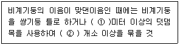
- ① : 1.0, ② : 4
- ① : 1.8, ② : 4
- ① : 1.0, ② : 2
- ① : 1.8, ② : 2
(정답률: 44%)
109. 풍화암의 굴착면 기울기기준으로 옳은 것은?
- 1 : 0.3
- 1 : 0.5
- 1 : 0.8
- 1 : 1.5
(정답률: 67%)
110. 선창의 내부에서 화물취급 작업을 하는 때에는 갑판의 윗면에서 선창 밑바닥까지 깊이가 몇 m 를 초과하는 경우에 해당 작업 근로자가 안전하게 통행할 수 있는 설비를 설치하여야 하는가?
- 1.0m
- 1.2m
- 1.3m
- 1.5m
(정답률: 70%)
111. 화물자동차에 짐을 싣는 작업 또는 내리는 작업을 하는 경우에는 근로자의 추가 위험을 방지하기 위하여 해당 작업에 종사하는 근로자가 바닥과 적재함의 짐 윗면 간을 안전하게 오르내리기 위한 설비를 설치하는 조건은 바닥으로부터 짐 윗면과의 높이가 몇 m 이상인가?
- 2m
- 4m
- 6m
- 8m
(정답률: 64%)
112. 하역작업시 위험방지에 대한 내용으로 옳지 않은 것은?
- 부두・안벽 등에서 하역작업을 할 때 작업장 및 통로의 위험한 부분에는 안전하게 작업할 수 있도록 조명을 유지해야 한다.
- 꼬임이 끊어진 섬유로프는 화물운반용 또는 고정용으로 사용하여서는 안된다.
- 부두 또는 안벽의 선을 따라 통로를 설치할 때는 폭을 75cm 이상으로 해야 한다.
- 포대, 가마니 등의 용기로 포장된 화물이 바닥으로부터 높이가 2m 이상 되는 경우, 인접 하적단과의 간격을 하적단 밑부분에서 10cm 이상으로 해야한다.
(정답률: 61%)
113. 달비계(곤돌라의 달비계는 제외)의 최대적재하중을 정할 때 사용하는 안전계수의 기준으로 옳은 것은?
- 달기체인의 안전계수는 10 이상
- 달기강대와 달비계의 하부 및 상부지점의 안전계수는 목재의 경우 2.5 이상
- 달기와이어로프의 안전계수는 5 이상
- 달기강선의 안전계수는 10 이상
(정답률: 58%)
114. 다음 중 터널공사의 전기발파작업에 대한 설명 중 옳지 않은 것은?
- 점화는 충분한 허용량을 갖는 발파기를 사용한다.
- 발파 후 즉시 발파모선을 발파기로부터 분리하고 그단부를 절연시킨다.
- 전선의 도통시험은 화약장전 장소로부터 최소 30m 이상 떨어진 장소에서 행한다.
- 발파모선은 고무 등으로 절연된 전선 20m 이상의 것을 사용한다.
(정답률: 56%)
115. 연약한 점토지반의 개량 공법으로 적절하지 않은 것은?
- 샌드드레인(Sand drain) 공법
- 생석회 말뚝(Chemico pile) 공법
- 페이퍼드레인(Paper drain) 공법
- 바이브로 플로테이션(Vibro flotation) 공법
(정답률: 61%)
116. 정격하중이 10톤인 크레인의 화물용 와이어로프에 대한 절단하중은 얼마인가? (단, 화물용 와이어로프의 안전계수는 5 이다.)
- 2톤
- 5톤
- 15톤
- 50톤
(정답률: 56%)
117. 강관비계(외줄・쌍줄 및 돌출비계)의 벽이음 및 버팀설치시 기준으로 옳은 것은?
- 인장재와 압축재와의 간격은 70cm 이내로 할 것
- 단관비계의 수직방향 조립간격은 7m 이하로 할 것
- 틀비계의 수평방향 조립간격은 10m 이하로 할 것
- 강관・통나무 등의 재료를 사용하여 견고한 것으로 할 것
(정답률: 57%)
118. 물이 결빙되는 위치로 지속적으로 유입되는 조건에서 온도가 하강함에 따라 토중수가 얼어 생성된 결빙크기가 계속 커져 지표면이 부풀어 오르는 현상은?
- 압밀침하(consolidation settlement)
- 연화(frost boil)
- 지반경화(hardening)
- 동상(frost heave)
(정답률: 71%)
119. 콘크리트 타설시 거푸집의 측압에 영향을 미치는 인자들에 대한 설명 중 적당하지 않은 것은?
- 슬럼프가 클수록 작다.
- 타설속도가 빠를수록 크다.
- 거푸집 속의 콘크리트 온도가 낮을수록 크다.
- 콘크리트의 타설높이가 높을수록 크다.
(정답률: 60%)
120. 산업안전기준에 관한 규칙에서 규정하고 있는 차량계건설기계에 해당되지 않는 것은?
- 불도저
- 어스드릴
- 크레인
- 백호우
(정답률: 36%)